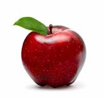
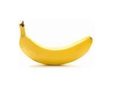
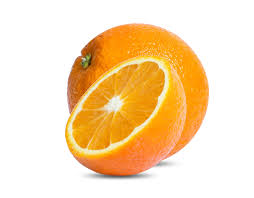
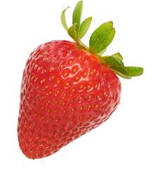

Apple
Apples are one of the most popular fruits in the world. They come in a variety of colors, including red, green, and yellow. They are known for their crisp texture and sweet or tart taste.
Banana
Bananas are a great source of potassium and make for a perfect snack. They are naturally sweet, soft, and easy to eat on the go. They are also often used in smoothies and desserts.
Grapes

Grapes are small, juicy fruits that can be eaten fresh or used to make wine, juice, and jelly. They come in different colors, such as green, red, and black, and are packed with antioxidants.
Orange
Oranges are a citrus fruit known for their juicy and tangy flavor. They are an excellent source of vitamin C and are commonly enjoyed as a snack or in juice form.
Strawberry
Strawberries are bright red, juicy, and have a sweet flavor. They are rich in vitamin C and antioxidants and are often used in desserts, salads, and smoothies.
Fruit Survey
Nutrition Facts of Top Fruits
| Fruit | Calories (per 100g) | Vitamin C (mg) | Potassium (mg) |
|---|---|---|---|
| Apple | 52 | 4.6 | 107 |
| Banana | 89 | 8.7 | 358 |
| Grapes | 69 | 10.8 | 191 |
| Orange | 47 | 53.2 | 181 |
| Strawberry | 32 | 58.8 | 153 |